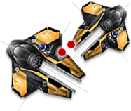

Tutorials:基本碰撞检测
http://wiki.starling-framework.org/tutorials/basic_collision_detection
碰撞检测几乎是所有游戏中的一个基本的部分。遗憾的是，它也耗费大量CUP资源，从而导致游戏不稳定以及减短电池寿命。为
了降低计算量，它更趋向于尽可能的回避碰撞检测编码。慢慢地，精炼复杂检测有助于做这些。用Starling，我们推荐一种3步
式方法来实现碰撞检测。
目录 |
球体边缘检测
从物件的边缘球体的碰撞检测开始吧。（那就是另一种要讲的方法：检测物件间的距离。）如果你设定的物件的起点大致在中心
上，那么这种方法对你来说是有帮助的。让我们来举个例子：你想检测2个太空飞船图像的物件。你可以建立一个“Ship”类：
public class Ship extends Sprite { public function Ship() { var img:Image = new Image(Assets.getTexture("spaceship")); img.x = -img.width / 2; img.y = -img.height / 2; addChild(img); } }
这最重要的是，我们得把图像移动到Sprite的中心。如果你现在旋转太空飞船，那么它就会以它的中心旋转-或许，不管怎么说
，那就是你想要的。
图像显示红色边缘球体和2个太空飞船的中心距离。现在，如果要检测他们是否碰撞，我们需要检测他们离的有多远：
var p1:Point = new Point(ship1.x, ship1.y); var p2:Point = new Point(ship2.x, ship2.y); var distance:Number = Point.distance(p1, p2); var radius1:Number = ship1.width / 2; var radius2:Number = ship2.width / 2; if (distance < radius1 + radius2) trace("Collision!")
那就是边缘球体测试-是不是很容易呢？在图像中，你可以看到边缘球体略大于太空飞船，所以这个检测还不够精确。假如边缘
球体测试导致了一个碰撞，我们可以精简这个检测并移到下一个更为精确的检测。
边缘盒检测
为了测试，你画一个环绕你的物件的矩形图像（而不是圆）：一个足够大的所有内容都定位进去的矩形。
再者，我们看看我们的太空飞船：如果他们都是相同坐标系的部分，边框盒检测就超级容易：
var bounds1:Rectangle = image1.bounds; var bounds2:Rectangle = image2.bounds; if (bounds1.intersects(bounds2)) trace(@"Collision!");
bounds属性支持所有显示对象-包括Sprites。它计算一个包含所有子元素的边框。同时，物件并非在同一个坐标系下（可能他们
是不同的sprites）。幸运地是，你可以根据需要在这个坐标系中获取这个边框盒：
var bounds:Rectangle = someObject.getBounds(this);
记住，所有的边框盒都是直立的矩形。一个矩形对象并无旋转属性！因此，如果你有一个旋转的图像，这个边缘矩形会在旋转期
间发生改变如此以致这个图像适应进去。 因此，这个方法可能仍然无法足够精确；但是它可以满足很多需要。并且如果它没有足够精确，你可以推进到一个更精确的碰撞
检测。
自定义点检测
为了检测不同形状的物件，你可以对一个物件特定点的碰撞测试（例如在矩形中的拐角）。Rectangle类有这个containsPoint方
法就是这个精确的原因
 自定义点检测可以使它尽可能用很不规则的形状来测试。然而，这个测试也是CPU最敏感的一个方法，所以尽可能回避这个方法
。
结尾
最后，这些是以粗略开始，然后循序渐进。尽早退出碰撞检测，以保持你远离CPU非必须的任务烦恼。这不仅仅每帧节约大量时
间，而且还节约了宝贵的电池寿命。Happy 碰撞!